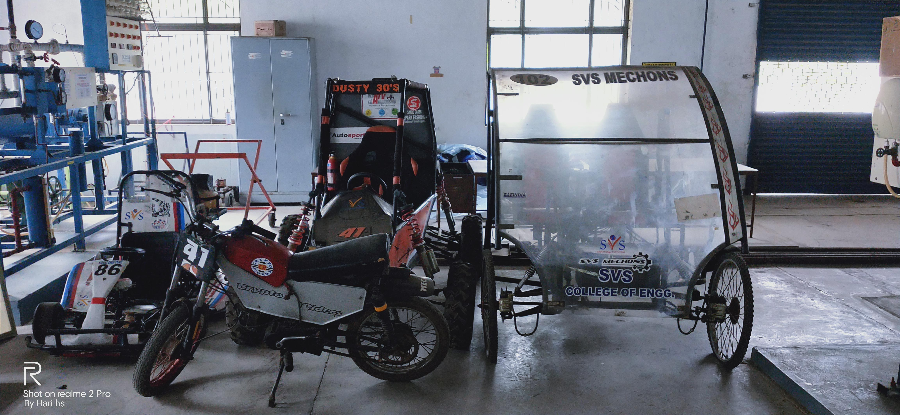

PROJECTS
Detailed Project Info

Mini Dirt Bike, Go kart and ATV
Designed and fabricated a mini dirt bike and Kart for university-level racing competitions. Key highlights of the project include:
- Basic machining processes such as milling, turning, and sheet metal fabrication.
- Collaboration with team members to optimize the design for performance and durability.
- Robust frame and components tailored for off-road racing performance.

Design and Fabrication of Paddy Husking Machine
Designed and fabricated a paddy husking machine to separate bran layers from paddy. Key features include:
- Sheet metal construction for durability and cost-efficiency.
- Welded components adhering to design transmission system principles.
- Optimized throughput with minimal maintenance requirements.

Design and Fabrication of Exhaust Cleaning System
Developed a motorbike exhaust cleaning system for my father's garage. This project focused on:
- Creating a sturdy holder to secure the exhaust during cleaning operations.
- Designing a sheet metal box with a chimney to reduce health hazards from fumes.
- Improving safety and extending the lifespan of exhaust systems through efficient cleaning mechanisms.